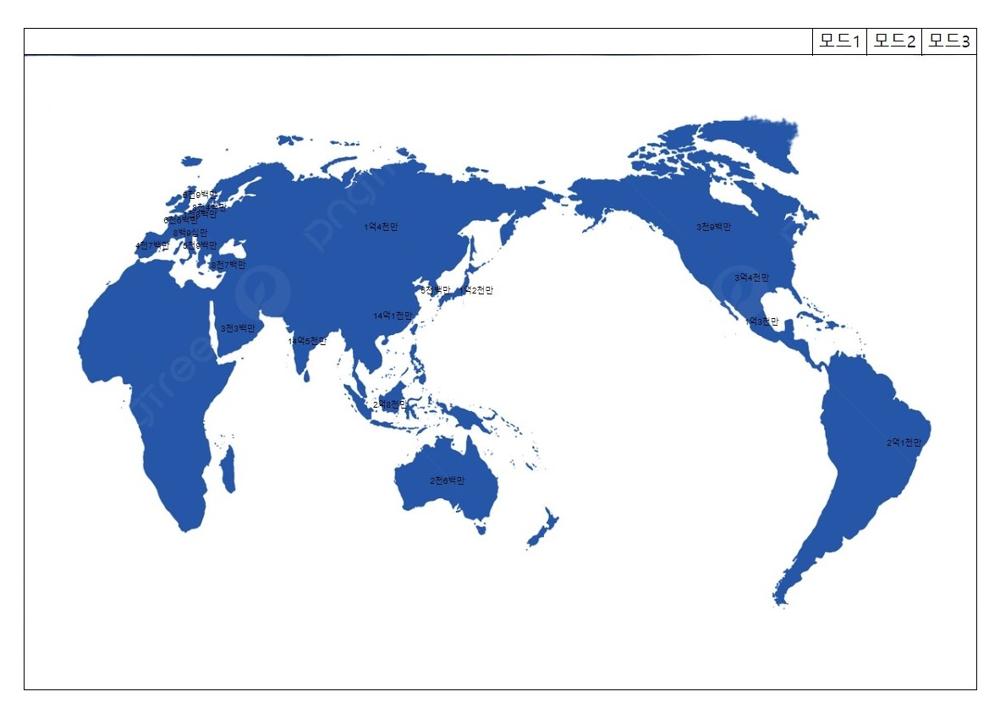
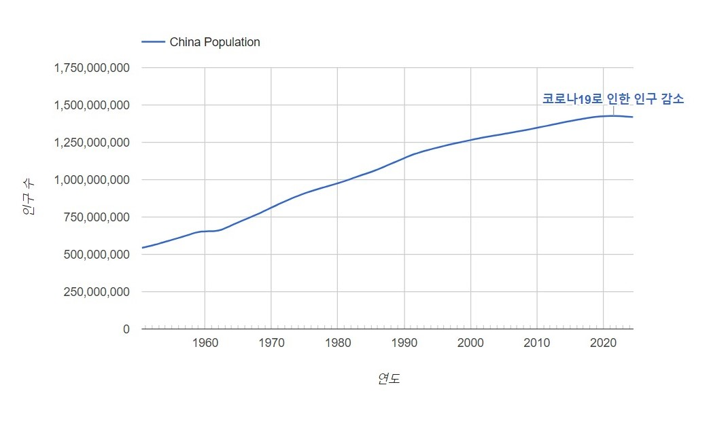

세계지도 화면 (3가지 모드)
1. 세계지도 위에 국가별 인구 수를 숫자로 표현하는 모드
2. 각 국가를 인구수가 클수록 더 큰 동그라미로 표현하는 모드
3. 인구 수를 단순히 막대그래프로 표현하는 모드
국가목록 화면
1. 인구 수 순으로 정렬(단순한 목록으로 표현)
2. 가나다 순으로 정렬

국가별 화면
1. 연도에 따른 인구 수 변화 그래프
2. 인구 변화에 영향을 준 주요 사건 링크
회원가입 화면
1. 이메일
2. 비밀번호
3. 닉네임
네비게이션 바
1. 세계지도 버튼 (메인화면)
2. 국가 목록 버튼
3. 회원가입 버튼
4. 로그인 버튼